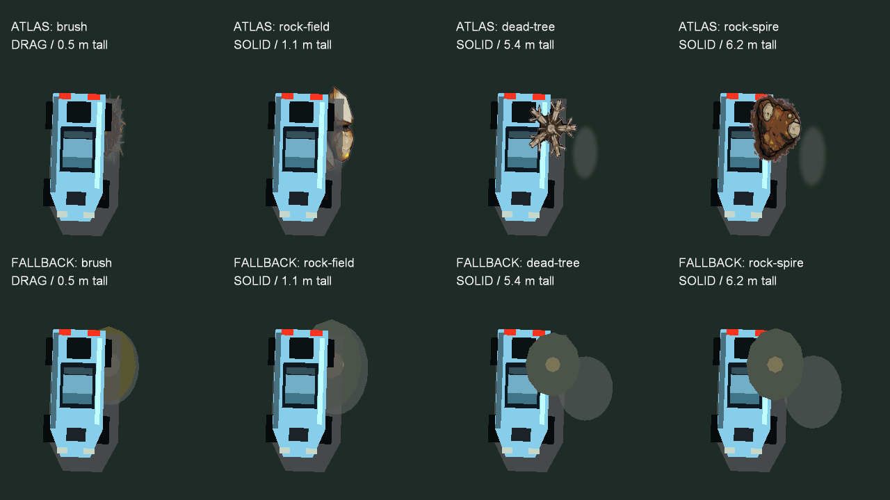

125 seeded placements across 25 courses; Crucible uses decoration only. Actual atlas props and shadows, physical ellipses, and procedural fallback. Owner feel/art approval and every Stick check remain pending. No Stick access or generated art.

Each report has 3,000 obstacle-off/on pairs, all 25 courses, five stock tier pairs, six grid rotations and four seeds per cell. Winner share is wins divided by races. The cohorts include out-of-pool stress entries and are not human balance studies.
| Mode | Observed result |
|---|---|
| Campaign damage | 18,000 finishers per arm; zero wrecks, early wrecks or watchdog survivors. Maximum tier winner-share change 0.8333 percentage points. |
| Full practice damage | 9,974 to 9,980 wrecks; early wrecks 7,158 to 7,102. One moving watchdog survivor remains, so full resolution fails. |
The practice survivor is a Bastion on Switchback, seed 101058111, at 12.48 m/s after two laps with zero blocked steps. Both full outputs are replayed against the final runtime; replay and active-contact counters are retained alongside each report. Replay runs are not extra independent samples.
Initial deeper placements; first recovery candidate, practice; first recovery candidate, campaign. The old “accepted” directory names are run tags: these candidates failed and are not accepted. Their stuck cars led to shallow solid placement and straight recovery requirements.
Desktop audit. Detailed rules, mutation tests, limitations and owner checks are in G-obstacles.md and OWNER-CHECKS.md. Persistent stuck cars were not seen in the final campaign sweep; transient no-progress intervals still reach 17.95 seconds.